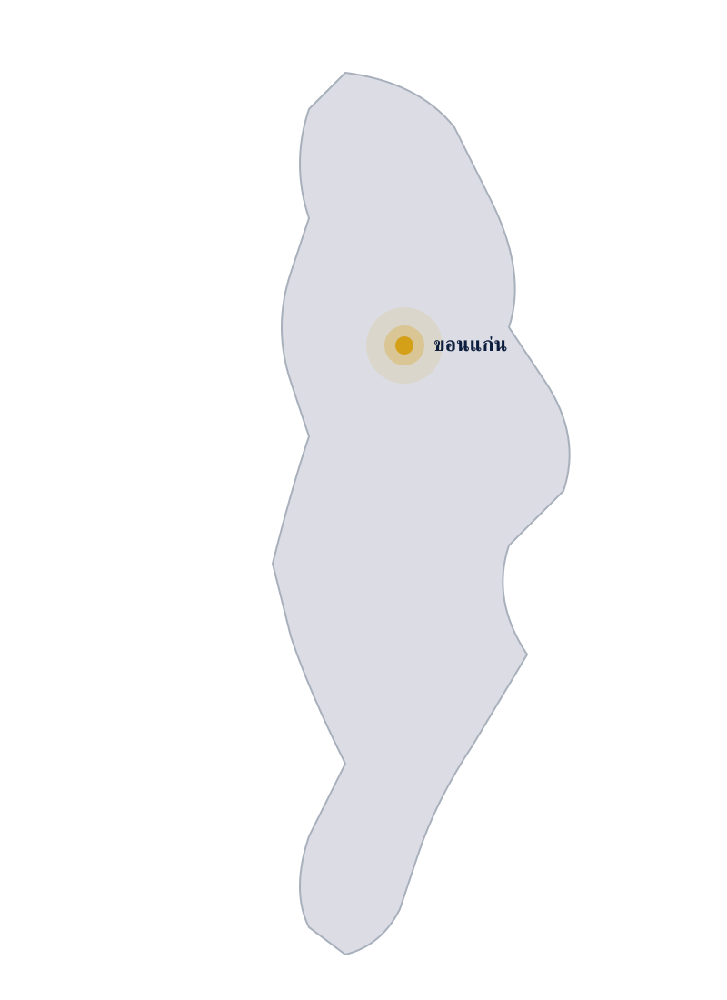
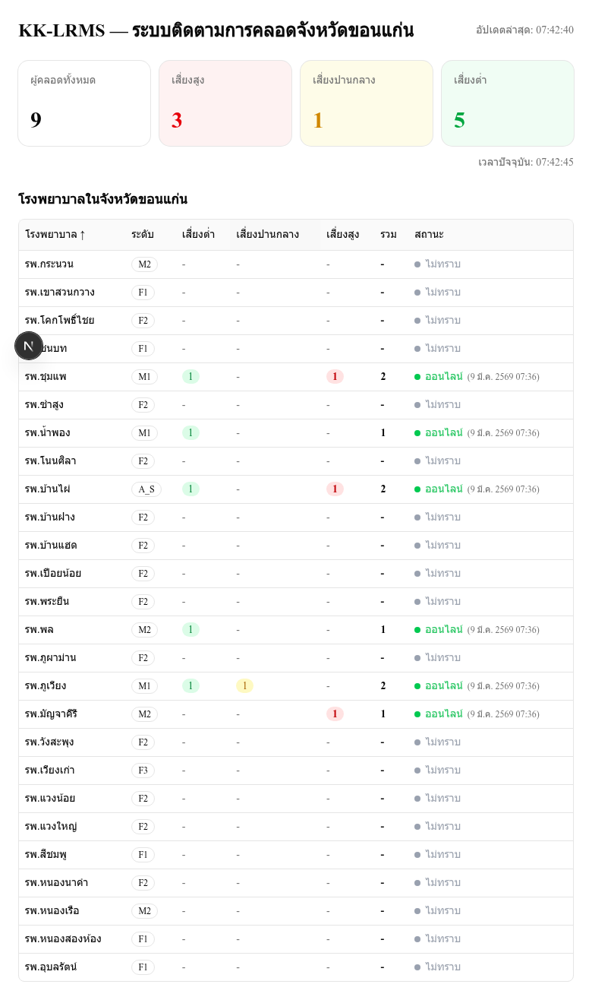

ขอนแก่นคือจังหวัดเดียวในประเทศไทย
ที่ทำสิ่งนี้ได้แล้ววันนี้
บทที่ 1 · ปัญหาที่มองไม่เห็น
ภาพประกอบเชิงเปรียบเทียบ · ข้อมูล MMR — สำนักนโยบายและยุทธศาสตร์ สธ.
บทที่ 2 · สิ่งที่ขอนแก่นสร้างขึ้น

ภาพถ่ายจากระบบจริง · ข้อมูลตัวอย่างจาก demo dataset (ไม่ใช่ผู้ป่วยจริง)
บทที่ 2 · ปัญญาทางคลินิก
| Gravida (ครรภ์แรก) | 2.0 |
| ANC visits < 4 | 1.5 |
| GA ≥ 40 สัปดาห์ | 1.5 |
| ส่วนสูง < 150 cm | 2.0 |
| น้ำหนักเพิ่ม > 20 kg | 2.0 |
| Fundal height > 36 cm | 2.0 |
| U/S fetal weight > 3,500 g | 2.0 |
| Hematocrit < 30% | 1.5 |
บทที่ 2 · การส่งต่อ
บทที่ 2 · รองรับทุกระบบ + ปลอดภัยตั้งแต่วันแรก
บทที่ 2 · พร้อมใช้งานจริง
ตัวเลขสด · ดึง ณ 25 พ.ค. 2569 · เวลาประชุม
บทที่ 3 · เรื่องจริงจากระบบ
ข้อมูลผ่านการ anonymize · ได้รับความเห็นชอบจาก [แพทย์ผู้รับผิดชอบ]
บทที่ 3 · จากจังหวัดสู่ประเทศ
6 สัปดาห์ต่อจังหวัด (รายละเอียดในสไลด์ถัดไป) · HOSxP เดิมไม่ต้องเปลี่ยน
บทที่ 3 · พิสูจน์การขยาย
สิ่งที่เราขอจากบอร์ดวันนี้
ขยายผล KK-LRMS สู่เขตสุขภาพที่ 7 (7 จังหวัด · ~150 รพช.)
Maternal Health KPI รอบปีงบประมาณ 2570
Hosting + onboarding + ops staffing สำหรับ Region 7
ข้อมูล KK-LRMS → national health data lake (Digital Health)
ติดต่อ [presenter name] · [email] · [phone]
ข้อมูลระบบเพิ่มเติม — สแกน QR
kk-lrms.bmscloud.in.th/about
หากบอร์ด Digital Health ถามรายละเอียดสถาปัตยกรรม
หากถามต้นทุนต่อโรงพยาบาล
| รายการ | ประมาณการ (บาท/จังหวัด) |
|---|---|
| Onboarding 1 จังหวัด (~20 รพช.) | [ระบุก่อนประชุม] |
| Cloud hosting (รายปี) | [ระบุก่อนประชุม] |
| Ops + 24/7 support (รายปี) | [ระบุก่อนประชุม] |
| รวม Region 7 ปีแรก | [ระบุก่อนประชุม] |
ค่าใช้จ่ายจริงขึ้นกับจำนวน รพช./จังหวัด และ data center ที่เลือก
หากถามการสอดคล้อง PDPA โดยละเอียด
หากถาม "จะวัดผลอย่างไร"
หากถามความเสี่ยงและการจัดการ
| ความเสี่ยง | มาตรการ |
|---|---|
| HOSxP downtime | Cached data + "Offline — last sync" badge · Webhook fallback path |
| Tunnel/network failure | Browser-only polling จาก station เครื่องเดียวก็ยังทำงาน |
| Key compromise (encryption) | Key rotation policy · re-encrypt batch script · audit log |
| โรงพยาบาล opt-out | is_active gate ในระบบ · ลบข้อมูลตาม PDPA มาตรา 32 |
| Wrong CPD score → false alert | สูติแพทย์เป็น final decision-maker · ระบบเป็น decision support |
หากถามทำไมไม่ใช้ระบบ X
กด N เพื่อเปิด/ปิด · มองเห็นเฉพาะหน้าจอ presenter (mirror mode ปิด overlay)
Pause on map for 5 seconds before speaking.
"จุดทองคือขอนแก่น — จังหวัดเดียวในประเทศไทยที่สูติแพทย์เห็นผู้คลอดทุกคนใน 26 รพช. ภายใน 30 วินาที วันนี้ผมมาเพื่อขอให้ภาพนี้ขยายไปทั่วเขต 7 และทั้งประเทศ"
"ค่าเฉลี่ย MMR ~17 ซ่อนความเหลื่อมล้ำ · เส้นทางข้อมูลปัจจุบัน — โทร/LINE · ล่าช้า 30–90 นาที"
"หน้าจอเดียว เห็นทุกห้องคลอดทั่วจังหวัด · 26 รพ · อัปเดต 30 วิ · CPD score คำนวณอัตโนมัติจาก HOSxP"
"CPD 8 ปัจจัย · ≥10 refer · partograph alert/action ตาม WHO · ข้อมูลจาก HOSxP ตรง ไม่มีพิมพ์ซ้ำ"
"refer match ด้วย CID hash SHA-256 · ไม่เก็บ plaintext · สูติแพทย์รับ refer เห็นประวัติเต็มก่อนรถถึง"
"HOSxP browser-only · non-HOSxP webhook · 5 ข้อ PDPA"
"อ่าน 6 ตัวเลขธรรมชาติ · ปิดด้วย 'ไม่ใช่ prototype — production'"
"เล่าเรื่องจริง · timeline 7 events · เน้น '14:45 เร็วกว่า workflow เดิม ~45 นาที' · ปิดด้วย 'เหตุผลที่มาขอวันนี้'"
"1 → 7 → 76 · ถ้ารับรองวันนี้ เขต 7 Q1–Q3 ปีหน้า · Q4 MOPH service · 2571 ครบทุกเขต"
"6 สัปดาห์/จังหวัด · 1 ทีม 3 จังหวัด · เขต 7 ใช้ 2 ทีม ~4 เดือน"
"สี่อย่าง: หนังสือ · Service Plan · งบ FY70 · HDC · เป็น package"
"ขอบคุณ · QR · ยินดีตอบคำถาม"
Next.js 16, React 19, PostgreSQL 16, NextAuth v5, BMS Session, Redis, Docker. 463 tests.
Onboarding + cloud + ops · ตัวเลข [TBD] · ขึ้นกับจำนวน รพช./จังหวัด
มาตรา 24/26/32/37 · DPA ลงนามแล้ว
เดือน 1-2 onboarding · 3-4 clinical adoption · 5-6 outcome KPIs · audit เดือน 6
HOSxP down, network, key compromise, opt-out, false alert
HDC = reporting · HOSxP-XE = รายโรง · cloud เอกชน = PDPA-ขัด · KK-LRMS = open, multi-tenant, PDPA